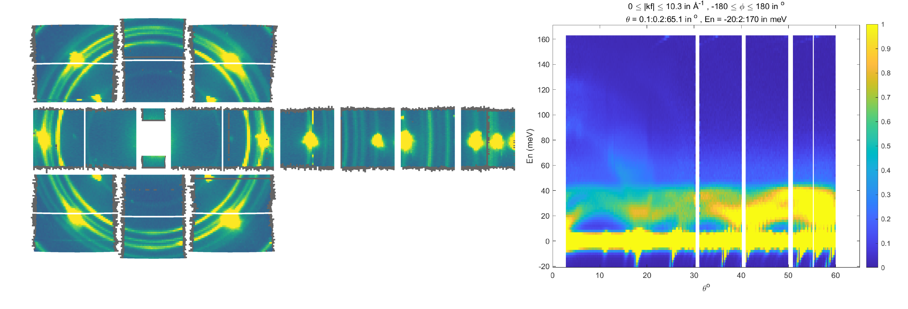
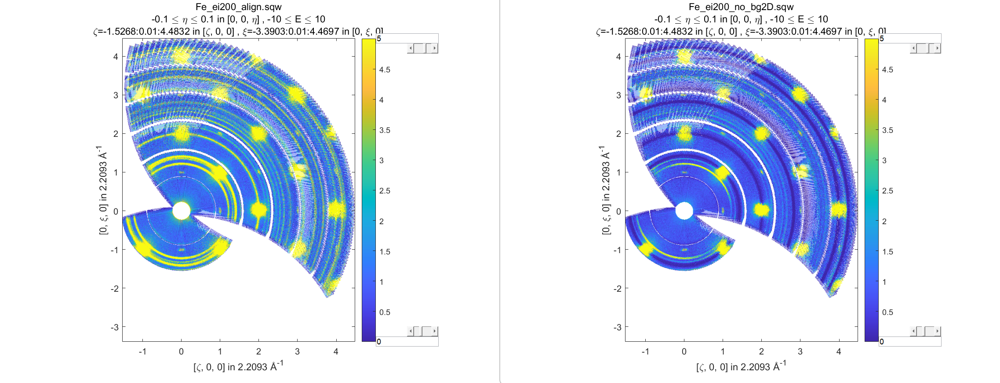
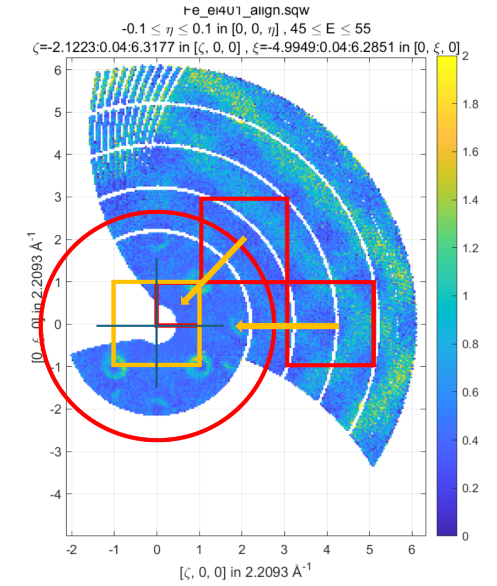

15. Generic Transformations
The previous chapters describe how one may do various
unary or binary operations over your data or can build your analytical model and simulate it over whole sqw file.
As whole sqw file can not be generally placed in memory, all these operations are
based on special PageOp family of algorithms, which operate loading a page of data in memory
and applying various operations to these data. For unary and binary operations we wrote these transformations for users and the sqw_eval algorithm from Simulation section
gives user a set of rules to write his own model in hklE coordinate system and apply it to whole sqw object.
15.1. Introduction
Generic transformations are the set of algorithms, which give user access to the body of PageOp algorithm to do whatever he needs with his sqw data. As this gives user the most flexible access to modifying sqw data, it requests from user most knowledge of sqw object design to do useful things with these data.
In particular, user have to know, that Horace stores its pixel data in Crystal Cartesian coordinate
system, which is orthogonal coordinate system attached to crystal lattice with x-axis parallel to
a* inverse lattice vector and two other axis being orthogonal to it. He needs to write
transformations over page of data presented in the form of [9 x npix] matrix, where npix is the page size (defined by hor_config.mem_chunk_size value), each column corresponds to a pixel and the pixel contain to the following values:
row 1: u1 % first momentum transfer (Q_x) coordinate in A^-1
row 2: u2 % second momentum transfer (Q_y) coordinate in A^-1
row 3: u3 % third momentum transfer (Q_z) coordinate in A^-1
row 4: dE % energy transfer values (meV)
row 5: run_idx % identifier of the run, contributed into this pixel
row 6: detector_idx % indices of the detectors, contributing into the image
row 7: energy_idx % indices of energy transfer values registered in experiment
row 8: signal % signal (normalized number of neutron events) registered for this pixel
row 9: variance % variance of the signal above.
In addition to that user should be familiar with the definition of projection, which establishes relationship between pixel coordinate system and the image coordinate system. A projection has number of methods from which two the most useful for transformations are:
% Transform pixels expressed in crystal Cartesian or any source
% coordinate systems defined by projection into image coordinate system
[pix_transformed] = proj.transform_pix_to_img(pix_cc);
% Transform pixels expressed in image coordinate coordinate systems
% into crystal Cartesian system or other source coordinate system,
% defined by projection
[pix_cc] = proj.transform_img_to_pix(pix_transformed);
Where proj is usually projection used by sqw object of interests, pix_cc is [4 x npix] matrix of pixel coordinates expressed in Crystal Cartesian coordinate system (see four first rows of pixels data above) and pix_transformed is [4 x npix] array of pixels coordinates expressed in image coordinate system.
Finally user should be familiar with concept of object object oriented programming as to write custom transformation one needs to use properties of the core transformation classes PageOp_sqw_op or
PageOp_sqw_op_bin_pixels described below alongside with the description of the appropriate algorithm.
15.2. sqw_op algorithm
sqw_op is the algorithm, which provides user with opportunity to modify signal and error values and
perform multiple unary or binary operations in simultaneously transforming large sqw object. Its signature looks as follows:
wout = sqw_op(win, @sqw_op_func, pars)
wout = sqw_op(win, @sqw_op_func, pars,'outfile',target_file_name)
where:
win–sqwfile, cell array array ofsqwobjects or strings that provides filenames ofsqwobjects on disk serving as the source ofsqwdata to process usingsqwop_func@sqw_op_func– handle to a function which performs desired operation over sqw data.pars– cellarray of parameters used bysqw_op_func. Ifsqw_op_funchave no parameters, empty parentheses{}should be provided.
Optional:
"outfile"– key followed by the string, which defines the name or name with full path to the file to store resulting filebackedsqwobject. If one does not specify this, the resulting filebacked object will be temporary, i.e. will be deleted after variablewoutwill go out of scope.
The output is:
wout: ansqwobject built fromwinby applyingsqw_op_funcover all pixels ofwinobjects and calculating appropriate image averages.
@sqw_op_func should have the form:
function output_sig_err = sqw_op_func(in_page_op,parameters)
data = in_page_op.data; % get page of pixel data expressed in Crystal Cartesian coordinate system
% Operations over signal and error as function of in_page_op, data and other parameters
...
% return results of operation as [2 x npix ] array of modified signal and variance data
output_sig_err = [signal_calc(:)';error_calc(:)'];
end
where in_page_op is the instance of PageOp_sqw_op class which is the core of sqw_op algorithm and will provides user with access to page of pixels data and other properties, necessary to define proper transformation.
Now let’s assume that you want to multiply an sqw object by 2 and extract a constant from the obtained value. You can do that using unary and binary operations, described in the chapter above:
>>wout = 2*w_in - 1;
This is simple code, but if your objects are filebased, this will requests two scans over large
sqw object. If you write sqw_op_func function:
function output_sig_err = sqw_op_unary(in_page_op,varargin)
% Apply two simple transformations of signal of an sqw object in one go.
data = in_page_op.data; % get access to page of pixel data
data(8,:) = 2*data-1; % change pixel data signal by multiplying it by 2 and extracting 1
output_sig_err = data(8:9,:); % combine signal and unchanged error into form, requested by algorithm
end
and apply sqw_op algorithm:
wout = sqw_op(win, @sqw_op_unary, 'outfile','operations_result.sqw')
You can do the same operation over large filebacked sqw object in one scan over whole sqw file, which in this simple case will be two times faster then applying these operations one after another.
If your theoretical model is built in Crystal Cartesian coordinate system rather than in hkldE coordinates you may write and apply it to pixel coordinates exactly like hkldE model for sqw_eval algorithm. Here, as the example of using sqw_op we try to remove cylindrical background obtained in the diagnostics chapter of this manual. It may be not the best way of removing whole background but a good example of using special projection to transform data expressed in Crystal Cartesian coordinate system to image coordinate system.
The sample background present in this case may be estimated by running Mantid reduction script and adding all reduced runs together:
{kind=link}

Left part of the image represents Mantid instrument view image. It is obvious that there is beam small beam leakage around beam stop window and strong powder lines around Bragg peaks. This is the background which one wants to remove. Right part of this image represents 2-dimensional image obtained from instrument_view_cut and we want to extract this image from whole sqw file containing magnetic signals.
Slimlined script which would produce such background removal is provided below:
%%=============================================================================
% Calculate and remove background for Ei=200 meV sample dataset
% =============================================================================
% Get access to sqw file for the Ei=200meV containing Horace angular scan
% which is located in "sqw/sqw2024" folder, in the position relative to the
% location of the script.
root_dir = fileparts(fileparts(fileparts(mfilename("fullpath"))));
sqw_dir=fullfile(root_dir,'sqw','sqw2024');
% define the name of the source file and the name of the resulting data file.
data_src200 =fullfile(sqw_dir,'Fe_ei200_align.sqw');
target = fullfile(sqw_dir,'Fe_ei200_no_bg2D.sqw');
src200 = sqw(data_src200); % create filebacked source sqw object
% calculate 2-dimensional cylindrical background in Instrument coordinate system.
w2_200meV = instrument_view_cut(src200,[0,0.2,65],[-20,2,170]);
% build background model for interpolation expressed in
% instrument view coordinate system.
x1 = w2_200meV.p{1};
x2 = w2_200meV.p{2};
x1 = 0.5*(x1(1:end-1)+x1(2:end));
x2 = 0.5*(x2(1:end-1)+x2(2:end));
F = griddedInterpolant({x1,x2},w2_200meV.s); % define background model using linear
% interpolation of signal
% call sqw_op with function to remove background
src200_noBb = sqw_op(src200,@remove_background,{w2_200meV,F},'outfile',target);
The page-function with actually used to remove background in the code above is:
function sig_var = remove_background(pageop_obj,bg_data,bg_model,varargin) % function to remove background from page of data. % Inputs: % pageop_obj -- instance of PageOp_sqw_op class providing necessary page of pixels data % bg_data -- two dimensional background dataset to remove % bg_model -- gridded interpolant to calculate background signal on 2-Dimensional % image. % Returns: % sig_var -- 2xnpix array of modified pixel's signal and variance. data = pageop_obj.page_data; % get access to page of pixel data % 2D background. get access to kf_sphere_proj to transform pixel data % into instrument coordinate system where background is % defined using instrument view projection % As this is special projection, it needs 5 rows of pixel data (needs run_id) % rather then the standard projection, which takes 4 rows. pix = bg_data.proj.transform_pix_to_img(data(1:5,:)); % interpolate background signal on the pixels coordinates expressed % in instrument coordinate system. bg_signal = bg_model(pix(2,:),pix(4,:)); % retrieve existing signal and variance values sig_var = data([8,9],:); % remove interpolated background signal from total signal sig_var(1,:) = data(8,:)-bg_signal; % exclude negative results from possible future fitting routine over_compensated = sig_var(1,:)<0; %sig_var(1,over_compensated) = 0; sig_var(2,over_compensated) = 0; end
Modified image clearly shows substantial decrease in parasitic signal around elastic line:
{kind=link}

Better background model is possible to remove more parasitic signal, though this task is fully in the hands of user.
15.3. sqw_op_bin_pixels algorithm
Let’s assume you are interested in magnetic signal which is present at relatively low \(\|Q\|\) due to magnetic form factor and signal covers multiple Brillouin zones at low \(\|Q\|\). You want to accumulate magnetic signal in first Brillouin zone to increase statistics and consider everything which is beyond some specific \(\|Q\|\) - value to be background to remove as signal there is negligibly small due to magnetic form factor, so you also want to move this signal to first Brillouin zone and extract background from magnetic signal. Figure below give example of such situation.
{kind=link}

sqw_op algorithms would not allow you to do this, as you can not change pixels coordinates.
sqw_op_bin_pixels algorithm is written to allow user changing pixels coordinates. Its interface
is the mixture of sqw_op interface and cut interface, which defines construction of new
image of interest from provided pixel and image data:
wout = sqw_op_bin_pixels(win, @sqw_op_func, pars,cut_pars{:})
wout = sqw_op_bin_pixels(win, @sqw_op_func, pars,cut_pars{:},'outfile',target_file_name);
where:
win–sqwfile, cell array array ofsqwobjects or strings that provides filenames ofsqwobjects on disk serving as the source ofsqwdata to process usingsqwop_func@sqw_op_func– handle to a function which performs desired operation over sqw data.pars– cellarray of parameters used bysqw_op_func. Ifsqw_op_funchave no parameters, empty parentheses{}should be provided.cut_pars– cellarray of cut parameters as described in cut except symmetry operations which are not supported by this algorithm ascutparameters but may be customized and provided as the parameters ofsqw_op_func.
Namely, cut_pars have the form:
cut_pars ={[ proj], p1_bin, p2_bin, p3_bin, p4_bin[, '-nopix']};
where:
proj defines the axes and origin of the cut including the shape of the region to extract and the representation in the resulting histogram. If not provided, the projection is taken from the input
winobject.pN_bin describe the histogram bins to capture the data.
optional
'-nopix'` argument means that resulting object would be ``dndobject, i.e. object which does not contain pixels.